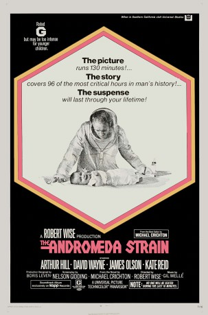
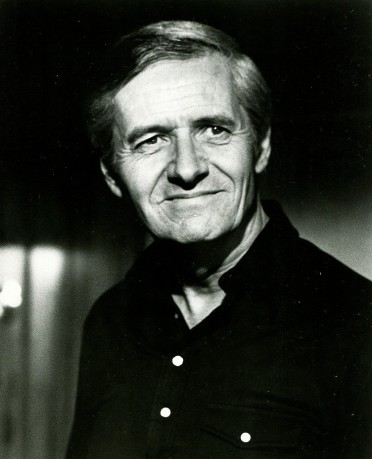
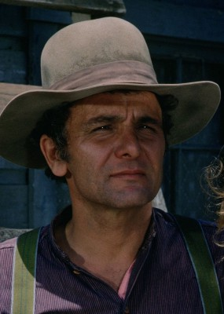

#7873 Andromeda - Tödlicher Staub aus dem All
Alternativ: The Andromeda Strain
Auszeichnungen: für 2 Oscars nominiert
 
 IMDB-Wertung: 7.2 / 10
IMDB-Wertung: 7.2 / 10  Metascore: 0
Metascore: 0 
When virtually all of the residents of Piedmont, New Mexico, are found dead after the return to Earth of a space satellite, the head of the US Air Force's Project Scoop declares an emergency. Many years prior to this incident, a group of eminent scientists led by Dr. Jeremy Stone (Arthur Hill) advocated for the construction of a secure laboratory facility that would serve as a base in the event an alien biological life form was returned to Earth from a space mission. Stone and his team - Drs. Dutton, Leavitt and Hall (David Wayne, Kate Reid, and James Olson, respectively)- go to the facility, known as Wildfire, and try to first isolate the life form while determining why two people from Piedmont (an old wino and a six-month-old baby) survived. The scientists methodically study the alien life form unaware that it has already mutated and presents a far greater danger in the lab, which is equipped with a nuclear self-destruct device should it manage to escape.
Jahr: 1971
Dauer: 130 Minuten
FSK: 12
Land: USA Studio: A Universal ® PictureTonspuren:
Untertitel: Deutsch,
Auflösung: 1080p (1920x816) Größe: 8837 MB
Genre: Thriller, Sci-Fi
Regisseur:  Robert Wise
Robert Wise
Drehbuch: Michael Crichton
Soundtrack: Gil Melle
Darsteller:
-  Arthur Hill als Dr. Jeremy Stone
- David Wayne als Dr. Charles Dutton
- James Olson als Dr. Mark Hall
- Kate Reid als Dr. Ruth Leavitt
- Paula Kelly als Karen Anson
 George Mitchell als Jackson
George Mitchell als Jackson Ramon Bieri als Major Manchek
Ramon Bieri als Major Manchek- Peter Hobbs als General Sparks
 Eric Christmas als Senator from Vermont
Eric Christmas als Senator from Vermont Ken Swofford als Toby (technician)
Ken Swofford als Toby (technician) Richard Bull als Air Force Major
Richard Bull als Air Force Major Walter Brooke als Assistant to Cabinet Secretary (uncredited)
Walter Brooke als Assistant to Cabinet Secretary (uncredited)- Susan Brown als Allison Stone (uncredited)
- Michael Crichton als Bearded Surgeon (uncredited)
- Sandra de Bruin als Technician (uncredited)
 Walker Edmiston als Voice (uncredited)
Walker Edmiston als Voice (uncredited) Lance Fuller als Man (uncredited)
Lance Fuller als Man (uncredited)- Robert L. Hughes als Air Force Technician (uncredited)
- Glenn Langan als Cabinet Secretary (uncredited)
- David McLean als Sen. McKenzie (New Mexico) (uncredited)
- Victoria Paige Meyerink als (uncredited)
 Emory Parnell als Pete 'Old Doughboy' Arnold (uncredited)
Emory Parnell als Pete 'Old Doughboy' Arnold (uncredited)-  Michael Pataki als Operator of 'The Hands' (uncredited)
- Quinn K. Redeker als Capt. Morris (uncredited)
- Lorna Thayer als Woman (uncredited)
- Len Wayland als Utah Crash Site Officer (uncredited)
- Kermit Murdock als Dr. Robertson
- Richard O'Brien als Grimes
- Mark Jenkins als Lt. Shawn (Piedmont team)
- Peter Helm als Sgt. Crane (Piedmont team)
- Joe Di Reda als Wildfire Computer Sgt. Burk
- Carl Reindel als Lt. Comroe
- Frances Reid als Clara Dutton
 John Carter als MP Capt. Morton
John Carter als MP Capt. Morton- Ivor Barry als Murray (uncredited)
- Joe Billings als Scientist (uncredited)
- Patty Bodeen als Girl (uncredited)
- Michael Bow als MP at Stone's (uncredited)
 Jan Burrell als Mother - Piedmont (uncredited)
Jan Burrell als Mother - Piedmont (uncredited)- Dee Carroll als Technician (uncredited)
- Duke Cigrang als Father - Piedmont (uncredited)
- Rhodie Cogan als Minor Role (uncredited)
- Lisa Daniels als Woman (uncredited)
- Bill Dunbar als Vandenberg AFB Sergeant (uncredited)
- Harold Dyrenforth als (uncredited)
- Sandra Ego als Girl (uncredited)
- Don Ellis als Minor Role (uncredited)
- Judy Farrell als Pam (uncredited)
- James W. Gavin als Dempsey - Helicopter Pilot (uncredited)
- Sheila Jo Guthrie als Girl - Piedmont (uncredited)
Datei: X:\1971\Andromeda - Tödlicher Staub aus dem All (1971, FSK12, 1920x816).mkv seit 02.01.2018
Festplatte: HD 1971-1979
 Es gibt insgesamt 28 Filme in der Gruppe '1971'
Es gibt insgesamt 28 Filme in der Gruppe '1971'